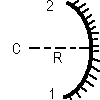
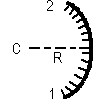

Miroir sphérique réel
(troué on non)

ou 
(concave ou convexe)
Définition
Il est défini par les points 1 et 2 et le centre de courbure C
(ou le rayon de courbure R). L'ordre des points 1 et 2 est important,
car il définit quelle est la face réfléchissante, l'autre
étant absorbante, comme sur l'image ci-dessus.
Le miroir peut être ajouté:
- en cliquant sur le bouton de la barre d'outil ayant la forme ci-dessus,
puis en faisant un clic simple pour saisir le premier point, puis en faisant
un clic simple pour saisir le second, puis un dernier clic pour placer
le point C (il est placé automatiquement sur la médiatrice
des points 1 et 2) (ne pas maintenir le bouton de la souris enfoncé
entre les deux points),
OU
- menu "Ajouter" puis "Système optique réel" puis "Miroir
sphérique concave" ou "Miroir sphérique convexe". On donne
alors les coordonnées des points 1 et 2, la valeur de rayon de courbure,
et la cractère obtu ou non du miroir (en effet, pour 1 et 2 donnés
et le rayon de courbure donné, il existe deux miroirs sphériques;
celui appelé "obtu" correspond à un angle d'ouverture (angle
entre CM1 et CM2) obtu).
Options
On peut imposer
- que les hachures soient tracées ou non à l'écran
- que l'axe de symétrie du miroir soit tracé ou non
- l'épaisseur et la couleur du trait représentant le miroir
à l'écran
- la couleur du trait représentant l'axe de symétrie à
l'écran
On peut aussi choisir de trouer le miroir en son centre
(pratique par exemple pour les télescopes de type Cassegrain).
Ces propriétés peuvent être rendues accessibles:
- à la construction du miroir si on passe par le menu "Ajouter"
- à tout instant en cliquant sur le bouton "Propriétés"
de la barre d'outil, puis en cliquant sur un des cercles bleus qui apparaissent
sur l'élément dont on veut obtenir les propriétés;
ne pas oublier à la fin de cliquer sur le bouton "Fin prop." de la
barre d'outil pour quitter le mode propriétés.
Divers
On peut demander que la normale au miroir soit tracée à
chaque point d'intersection d'un rayon lumineux avec ce miroir:
- menu "Options", vérifier que "Afficher les normales" est coché
OU
- dans la barre d'outil, boite à cocher "Normales"
On peut aussi demander que les angles d'incidence soient affichés
(en °):
- menu "Options", vérifier que "Afficher les angles" est coché
OU
- dans la barre d'outil, boite à cocher "Angles d'incidence et
de réfraction"
L'angle de réflexion n'est pas affiché, afin de ne pas surcharger
les représentations.
Le nombre de décimales sur les angles est fixé dans
la boite de dialogue des options des normales: menu "Options" puis "Options
des normales"
Retour à la page
d'accueil